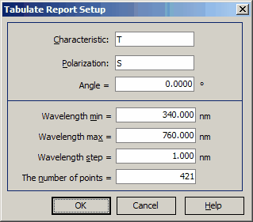

Tabulate Report Setup
Tabulate Report Setup
Navigation: OptiLayer Menu Commands > Results Menu >
Tabulate Report Setup
` <u_and_g_values.html>`__ ` <idh_menu_results.html>`__ ` <idh_menu_configuration.html>`__
The Tabulate command is accessible from the Results Menu. It allows generating a report for any spectral characteristic calculated by OptiLayer.

In the Tabulate Report Setup window, the user can select any characteristic from the following list:
T, R, BR, A - transmittance, reflectance, back reflectance and absorptance;
ϕr, ϕt - phase shifts on reflection and transmission;
dϕr, dϕt - difference between phase shifts for s- and p-polarizations on reflection and transmission;
GDr, GDt - group delay for reflection and transmission;
GDDr, GDDt - group delay dispersion for reflection and transmission;
TDDr, TDDt - third order derivative dispersion for reflection and transmission;
UDT - User-Defined characteristic. This characteristic coincides with User-Defined Target for currently loaded Target file.
Polarization combo box specifies the desired polarization state. Angle entry field specifies the incidence angle.
In the Spectral mode, you can set a wavelength range (Wavelength min, Wavelength max), a step of the wavelength grid, and a number of spectral points for the Tabulate Report. When you change one of these parameters, other parameters are automatically updated accordingly. Press OK to run the evaluation procedure and to display the Tabulate Report.
In the Angular Mode, you are prompted to set the range of incidence angles, the angular step, and the number of angular points.